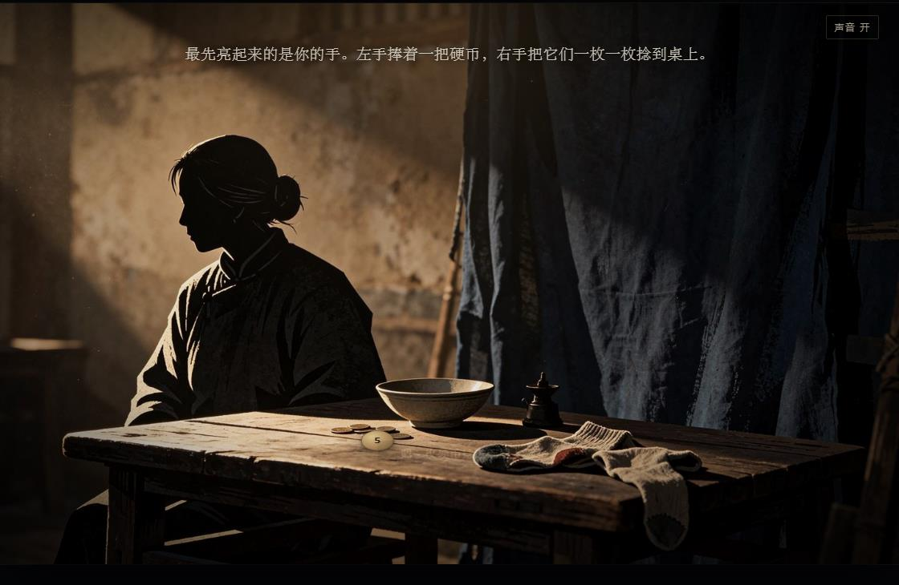
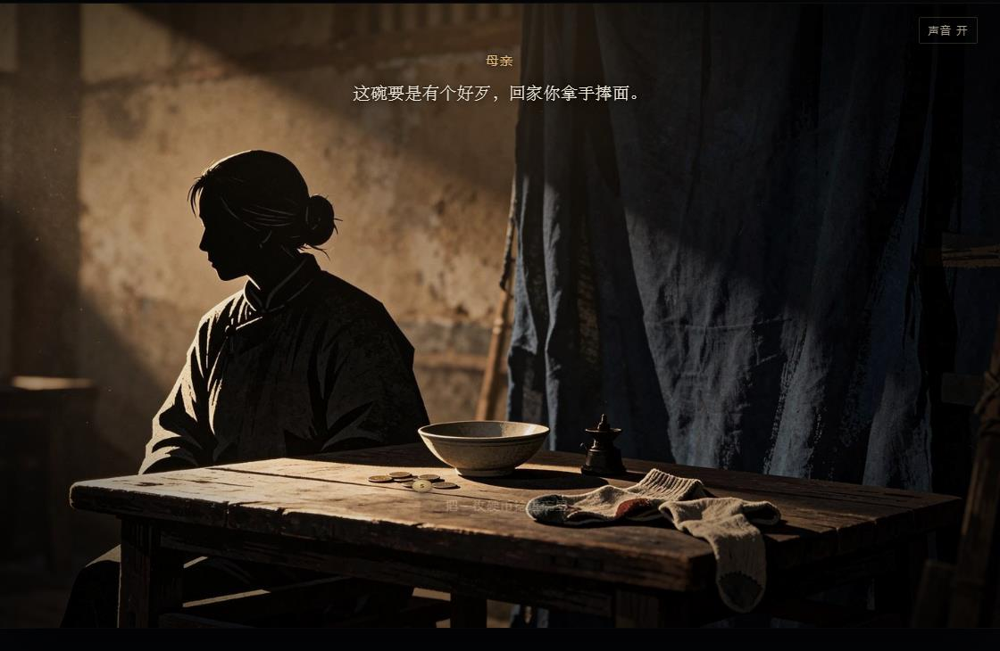

01 / 假钱
一枚五分钱，转出八百大洋
你用一枚五分钱，在碗沿转出“八百大洋”的动静。前排女孩真的以为钱掉在碗里——你得亲手把碗端到她面前，告诉她没有。
钱掉在里面了。

1935 年，怀玉山。镇上的戏台正在演《清贫》。你在后台，隔着一层蓝布帘，替台上的人做响：钱、碗、雨、脚步。
这不是读完的剧本，是一个可玩的切片。你先做响，再听它落到谁耳朵里。它像戏剧，因为只有一间后台；它必须是游戏，因为台上所有的响都是你做的，后果由你承担。
“我的终极标准只有两条：玩家能不能共情；玩法有没有创意。玩法是给剧本增效的。”
—— 项目定调
你用一枚五分钱，在碗沿转出“八百大洋”的动静。前排女孩真的以为钱掉在碗里——你得亲手把碗端到她面前，告诉她没有。
钱掉在里面了。

母亲递来一双补过底的线袜。搓像树叶，抖只有一声风，叩桌沿小灯都不亮。你能把一枚钱响成八百枚，却让这双袜子发不出声。
手艺的边界，落在母亲补过的那块布上。
满裤袋一块钱磕着钥匙。这回，满屋子的麦克风都已经关了。前面你一直在替台上的人做响，最后这一下只给你自己听。
这回没有一只麦克风开着。
没有战斗，没有 QTE。只有七个动词，每一个都要你亲手做。声音不是配乐，是你手里的材料。
你能把一枚钱响成八百枚；
却让一双补过的袜子发不出声。
这不是成品。它是一个用来判断“值不值得投人”的切片。